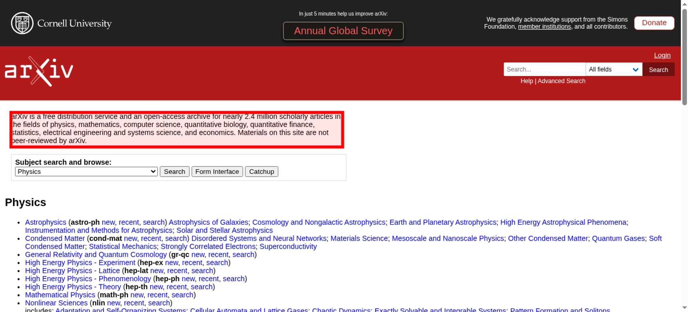

Tested 2025-11-15 02:30:59 using Chrome 141.0.7390.107 (runtime settings).
| Metric | Value |
|---|---|
| Page metrics | |
| Performance score | 95 |
| Total page size | 133.1 KB |
| Requests | 13 |
| Timing metrics | |
| TTFB | 74 ms |
| First Paint | 144 ms |
| Fully Loaded | 206 ms |
| Google Web Vitals | |
| TTFB | 74 ms |
| First Contentful Paint (FCP) | 144 ms |
| Largest Contentful Paint (LCP) | 144 ms |
| Cumulative Layout Shift (CLS) | 0.00 |
| Visual Metrics | |
| First Visual Change | 133 ms |
| Speed Index | 133 ms |
| Visual Complete 85% | 133 ms |
| Visual Complete 99% | 133 ms |
| Last Visual Change | 133 ms |
Choose HAR:
Use--filmstrip.showAll to show all filmstrips.
The coach helps you find performance problems on your web page using web performance best practice rules. And gives you advice on privacy and best practices. Tested using Coach-core version 8.1.3.

| Title | Advice | Score | |||||||||||||||||||||
|---|---|---|---|---|---|---|---|---|---|---|---|---|---|---|---|---|---|---|---|---|---|---|---|
| Don't scale images in the browser (avoidScalingImages) | The page has 1 image that are scaled more than 100 pixels. It would be better if those images are sent so the browser don't need to scale them. | 90 | |||||||||||||||||||||
| Description: It's easy to scale images in the browser and make sure they look good in different devices, however that is bad for performance! Scaling images in the browser takes extra CPU time and will hurt performance on mobile. And the user will download extra kilobytes (sometimes megabytes) of data that could be avoided. Don't do that, make sure you create multiple version of the same image server-side and serve the appropriate one. | |||||||||||||||||||||||
| Offenders: | |||||||||||||||||||||||
| Do not load specific print stylesheets. (cssPrint) | The page has 1 print stylesheet. You should include that stylesheet using @media type print instead. | 90 | |||||||||||||||||||||
| Description: Loading a specific stylesheet for printing slows down the page, even though it is not used. You can include the print styles inside your other CSS file(s) just by using an @media query targeting type print. | |||||||||||||||||||||||
| Offenders: | |||||||||||||||||||||||
| Avoid extra requests by setting cache headers (cacheHeaders) | The page has 1 request that are missing a cache time. Configure a cache time so the browser doesn't need to download them every time. It will save 243 B the next access. | 90 | |||||||||||||||||||||
| Description: The easiest way to make your page fast is to avoid doing requests to the server. Setting a cache header on your server response will tell the browser that it doesn't need to download the asset again during the configured cache time! Always try to set a cache time if the content doesn't change for every request. | |||||||||||||||||||||||
| Offenders: | |||||||||||||||||||||||
| Long cache headers is good (cacheHeadersLong) | The page has 11 requests that have a shorter cache time than 30 days (but still a cache time). | 89 | |||||||||||||||||||||
| Description: Setting a cache header is good. Setting a long cache header (at least 30 days) is even better beacause then it will stay long in the browser cache. But what do you do if that asset change? Rename it and the browser will pick up the new version. | |||||||||||||||||||||||
| Offenders: | |||||||||||||||||||||||
| Always compress text content (compressAssets) | The page has 6 requests that are served uncompressed. You could save a lot of bytes by sending them compressed instead. | 40 | |||||||||||||||||||||
| Description: In the early days of the Internet there were browsers that didn't support compressing (gzipping) text content. They do now. Make sure you compress HTML, JSON, JavaScript, CSS and SVG. It will save bytes for the user; making the page load faster and use less bandwith. | |||||||||||||||||||||||
Offenders:
| |||||||||||||||||||||||
| Avoid using incorrect mime types (mimeTypes) | The page has 1 misconfigured mime type. | 99 | |||||||||||||||||||||
| Description: It's not a great idea to let browsers guess content types (content sniffing), in some cases it can actually be a security risk. | |||||||||||||||||||||||
| Offenders: | |||||||||||||||||||||||
| Make each CSS response small (optimalCssSize) | https://arxiv.org/static/browse/0.3.4/css/arXiv.css?v=20241206 size is 65.6 kB (65639) and that is bigger than the limit of 14.5 kB. Try to make the CSS files fit into 14.5 KB. | 90 | |||||||||||||||||||||
| Description: Make CSS responses small to fit into the magic number TCP window size of 14.5 KB. The browser can then download the CSS faster and that will make the page start rendering earlier. | |||||||||||||||||||||||
Offenders:
| |||||||||||||||||||||||
| Don't use private headers on static content (privateAssets) | The page has 1 request with private headers. Make sure that the assets really should be private and only used by one user. Otherwise, make it cacheable for everyone. | 90 | |||||||||||||||||||||
| Description: If you set private headers on content, that means that the content are specific for that user. Static content should be able to be cached and used by everyone. Avoid setting the cache header to private. | |||||||||||||||||||||||
| Offenders: | |||||||||||||||||||||||
| Title | Advice | Score |
|---|---|---|
| Set a referrer-policy header to make sure you do not leak user information. (referrerPolicyHeader) | Set a referrer-policy header to make sure you do not leak user information. | 0 |
| Description: Referrer Policy is a new header that allows a site to control how much information the browser includes with navigations away from a document and should be set by all sites. https://scotthelme.co.uk/a-new-security-header-referrer-policy/. | ||
| Offenders: | ||
| Page info | |
|---|---|
| Title | arXiv.org e-Print archive |
| Width | 1350 |
| Height | 1895 |
| DOM elements | 478 |
| Avg DOM depth | 8 |
| Max DOM depth | 14 |
| Iframes | 0 |
| Script tags | 4 |
| Local storage | 76 B |
| Session storage | 0 b |
| Network Information API | 4g |
Data collected using Wappalyzer version 6.10.54. With updated code from Webappanalyzer 2024-12-27. Use --browsertime.firefox.includeResponseBodies htmlor --browsertime.chrome.includeResponseBodies htmlto help Wappalyzer find more information about technologies used.
| Technology | Confidence | Category |
|---|---|---|
| Varnish | 100 | Caching |
| Google Cloud | 100 | IaaS |
| Google Cloud Trace | 100 | Performance |
| Visual Metrics | |
|---|---|
| First Visual Change | 133 ms |
| Speed Index | 133 ms |
| Visual Complete 85% | 133 ms |
| Visual Complete 95% | 133 ms |
| Visual Complete 99% | 133 ms |
| Last Visual Change | 133 ms |
| Visual Readiness | 0 ms |
| Navigation Timing | |
|---|---|
| backEndTime | 74 ms |
| domContentLoadedTime | 133 ms |
| domInteractiveTime | 133 ms |
| domainLookupTime | 15 ms |
| frontEndTime | 49 ms |
| pageDownloadTime | 11 ms |
| pageLoadTime | 134 ms |
| redirectionTime | 0 ms |
| serverConnectionTime | 40 ms |
| serverResponseTime | 27 ms |
| Google Web Vitals | |
|---|---|
| Time to first byte (TTFB) | 74 ms |
| First Contentful Paint (FCP) | 144 ms |
| Largest Contentful Paint (LCP) | 144 ms |
| Total Blocking Time (TBT) | 0 ms |
| Extra timings | |
|---|---|
| TTFB | 74 ms |
| First Paint | 144 ms |
| Load Event End | 134 ms |
| Fully loaded | 206 ms |
When in time the page main content is rendered (collected using the Largest Contentful Paint API). Read more about Largest Contentful Paint.
| Element type | P |
| Element/tag | <p class="tagline"></p> |
| Render time | 144 ms |
| Element render delay | 71 ms |
| TTFB | 74 ms |
| Resource delay | 0 ms |
| Resource load duration | 0 ms |
| Load time | 0 ms |
| Size (width*height) | 41856 |
| DOM path | |

The largest contentful paint is highlighted in the image. If no element is highlighted the element was removed before the screenshot or the LCP API couldn't find the element.
No layout shift detected.
Read more about the Long Animation Frames API here here.
The top 10 longest animation frames entries
| Blocking duration | Work duration | Render duration | PreLayout Duration | Style And Layout Duration |
|---|---|---|---|---|
| 0 ms | 37.3 ms | 13.3 ms | 0 ms | 13.3 ms |
| No availible script information. | ||||
There are no Server Timings.
There are no custom configured scripts.
There are no custom extra metrics from scripting.
| name | value |
|---|---|
| AudioHandlers | 0 |
| AudioWorkletProcessors | 0 |
| Documents | 12 |
| Frames | 10 |
| JSEventListeners | 7 |
| LayoutObjects | 1092 |
| MediaKeySessions | 0 |
| MediaKeys | 0 |
| Nodes | 1633 |
| Resources | 12 |
| ContextLifecycleStateObservers | 16 |
| V8PerContextDatas | 3 |
| WorkerGlobalScopes | 0 |
| UACSSResources | 0 |
| RTCPeerConnections | 0 |
| ResourceFetchers | 12 |
| AdSubframes | 0 |
| DetachedScriptStates | 2 |
| ArrayBufferContents | 0 |
| LayoutCount | 1 |
| RecalcStyleCount | 4 |
| LayoutDuration | 10 |
| RecalcStyleDuration | 3 |
| DevToolsCommandDuration | 3 |
| ScriptDuration | 1 |
| V8CompileDuration | 0 |
| TaskDuration | 35 |
| TaskOtherDuration | 18 |
| ThreadTime | 0 |
| ProcessTime | 0 |
| JSHeapUsedSize | 1555980 |
| JSHeapTotalSize | 2359296 |
| FirstMeaningfulPaint | 142 |
How the page is built.
| Summary | |
|---|---|
| HTTP version | HTTP/2.0 |
| Total requests | 13 |
| Total domains | 1 |
| Total transfer size | 133.1 KB |
| Total content size | 129.8 KB |
| Responses missing compression | 6 |
| Number of cookies | 0 |
| Third party cookies | 0 |
| Requests per response code | |
|---|---|
| 200 | 13 |
| URL | Type | Transfer Size | Content Size |
|---|---|---|---|
| https://arxiv.org/st...3.4/css/arXiv.css | css | 64.1 KB | 63.8 KB |
| https://arxiv.org/ | html | 42.2 KB | 41.9 KB |
| https://arxiv.org/st...d-white-SMALL.svg | svg | 10.4 KB | 10.1 KB |
| https://arxiv.org/st...e-color-white.svg | svg | 3.2 KB | 3.0 KB |
| https://arxiv.org/st...js/optin-modal.js | javascript | 2.6 KB | 2.4 KB |
| https://arxiv.org/st...browse_search.css | css | 2.3 KB | 2.1 KB |
| https://arxiv.org/st...k-small-white.svg | svg | 2.0 KB | 1.7 KB |
| https://arxiv.org/st...favicon-32x32.png | image | 1.9 KB | 1.7 KB |
| https://arxiv.org/st...cknowledgement.js | javascript | 1.8 KB | 1.6 KB |
| https://arxiv.org/st...4/js/accordion.js | javascript | 887 B | 669 B |
| https://arxiv.org/st.../site.webmanifest | other | 791 B | 426 B |
| https://arxiv.org/st...s/arXiv-print.css | css | 705 B | 438 B |
| https://arxiv.org/institutional_banner | json | 243 B | 2 B |
| Content | Header Size | Transfer Size | Content Size | Requests |
|---|---|---|---|---|
| html | 0 b | 42.2 KB | 41.9 KB | 1 |
| css | 0 b | 67.1 KB | 66.3 KB | 3 |
| javascript | 0 b | 5.3 KB | 4.6 KB | 3 |
| image | 0 b | 1.9 KB | 1.7 KB | 1 |
| svg | 0 b | 15.6 KB | 14.8 KB | 3 |
| json | 0 b | 243 B | 2 B | 1 |
| other | 0 b | 791 B | 426 B | 1 |
| Total | 0 b | 133.1 KB | 129.8 KB | 13 |
| Domain | Total download time | Transfer Size | Content Size | Requests |
|---|---|---|---|---|
| arxiv.org | 451 ms | 133.1 KB | 129.8 KB | 13 |
| type | min | median | max |
|---|---|---|---|
| Expires | 0 seconds | 12 hours | 12 hours |
| Last modified | 1 week | 1 week | 1 week |
Included requests done after load event end.
| Content | Transfer Size | Requests |
|---|---|---|
| html | 0 b | 0 |
| css | 0 b | 0 |
| javascript | 0 b | 0 |
| image | 1.9 KB | 1 |
| font | 0 b | 0 |
| other | 791 B | 1 |
| Total | 2.7 KB | 2 |
Includes requests done after DOM content loaded.
| Content | Transfer Size | Requests |
|---|---|---|
| html | 0 b | 0 |
| css | 0 b | 0 |
| javascript | 0 b | 0 |
| image | 1.9 KB | 1 |
| font | 0 b | 0 |
| json | 243 B | 1 |
| other | 791 B | 1 |
| Total | 3.0 KB | 3 |
Third party requests categorised by Third party web version 0.26.2.
Calculated using .*arxiv.* (use --firstParty to configure).
| Content | Header Size | Transfer Size | Content Size | Requests |
|---|---|---|---|---|
| html | 0 b | 42.2 KB | 41.9 KB | 1 |
| css | 0 b | 67.1 KB | 66.3 KB | 3 |
| javascript | 0 b | 5.3 KB | 4.6 KB | 3 |
| image | 0 b | 1.9 KB | 1.7 KB | 1 |
| font | 0 b | 0 b | 0 b | 0 |
| svg | 0 b | 15.6 KB | 14.8 KB | 3 |
| json | 0 b | 243 B | 2 B | 1 |
| other | 0 b | 791 B | 426 B | 1 |
| Total | N/A | 133.1 KB | 129.8 KB | 13 |
| Content | Header Size | Transfer Size | Content Size | Requests |
|---|---|---|---|---|
| html | 0 b | 0 b | 0 b | 0 |
| css | 0 b | 0 b | 0 b | 0 |
| javascript | 0 b | 0 b | 0 b | 0 |
| image | 0 b | 0 b | 0 b | 0 |
| font | 0 b | 0 b | 0 b | 0 |
| Total | N/A | N/A | N/A |
afterPageCompleteCheck.png

layoutShift.png
largestContentfulPaint.png
{kind=link}
{kind=link}
{kind=link}
{kind=link}
{kind=link}
{kind=link}
{kind=link}
{kind=link}
{kind=link}
{kind=link}
{kind=link}
{kind=link}
{kind=link}